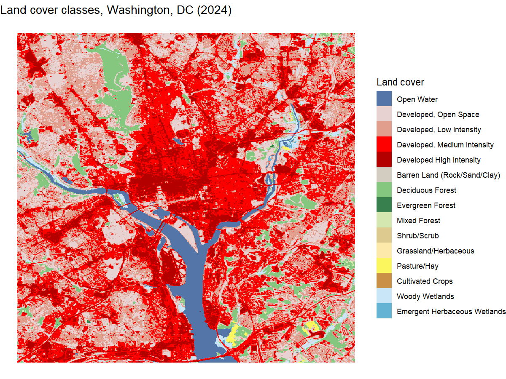

Annual NLCD Land Cover
land_cover.Rmdget_nlcd_land_cover() summarizes Annual National Land
Cover Database (NLCD) land cover – a 30-meter categorical raster – to
Census tracts (by default) or to a set of geometries you supply. The
simplest form is to pass in the counties for which you want data.
Passing return_raw = TRUE additionally attaches the raw
(cropped) raster, which we use below to map land cover directly.
library(climateapi)
library(dplyr)
library(terra)
library(ggplot2)
land_cover = get_nlcd_land_cover(
## Washington, DC
county_geoids = "11001",
year = 2024,
return_raw = TRUE)We can also plot the underlying raster directly. The raw (cropped)
NLCD raster rides along on the result as an attribute, so we pull out
the SpatRaster for the requested year, convert it to a data
frame of cell centers, and color each cell by its land cover class with
ggplot2.
## the raw raster is attached as an attribute; pull out the SpatRaster for the
## (single) requested year
land_cover_raster = attr(land_cover, "nlcd_raster")$rast[[1]]
## the NLCD class names and their standard colors, ordered by numeric code so the
## legend reads in the conventional NLCD order rather than alphabetically
nlcd_lookup = get_nlcd_land_cover_colors() %>%
dplyr::arrange(land_cover_code)
## the raster stores the class name as its category, so converting to a data frame
## gives one row per cell with its (x, y) center and class name
land_cover_df = land_cover_raster %>%
terra::as.data.frame(xy = TRUE) %>%
purrr::set_names(c("x", "y", "land_cover_class")) %>%
dplyr::mutate(
land_cover_class = factor(land_cover_class, levels = nlcd_lookup$land_cover_class))
## a named vector mapping each class to its color, for scale_fill_manual()
class_colors = nlcd_lookup %>%
dplyr::select(land_cover_class, color) %>%
tibble::deframe()
ggplot(land_cover_df, aes(x = x, y = y, fill = land_cover_class)) +
geom_raster() +
scale_fill_manual(values = class_colors, name = "Land cover") +
labs(title = "Land cover classes, Washington, DC (2024)", x = NULL, y = NULL) +
theme_void()
plot of chunk plot-land-cover